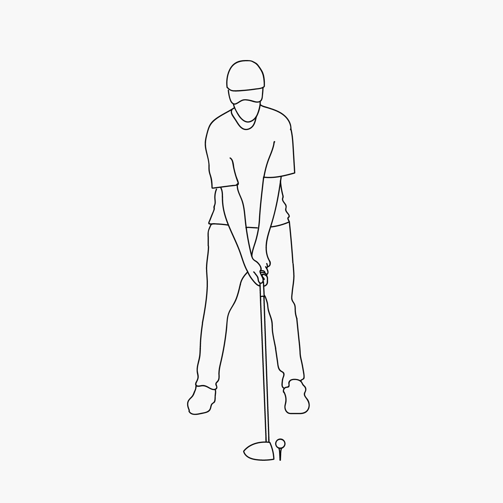
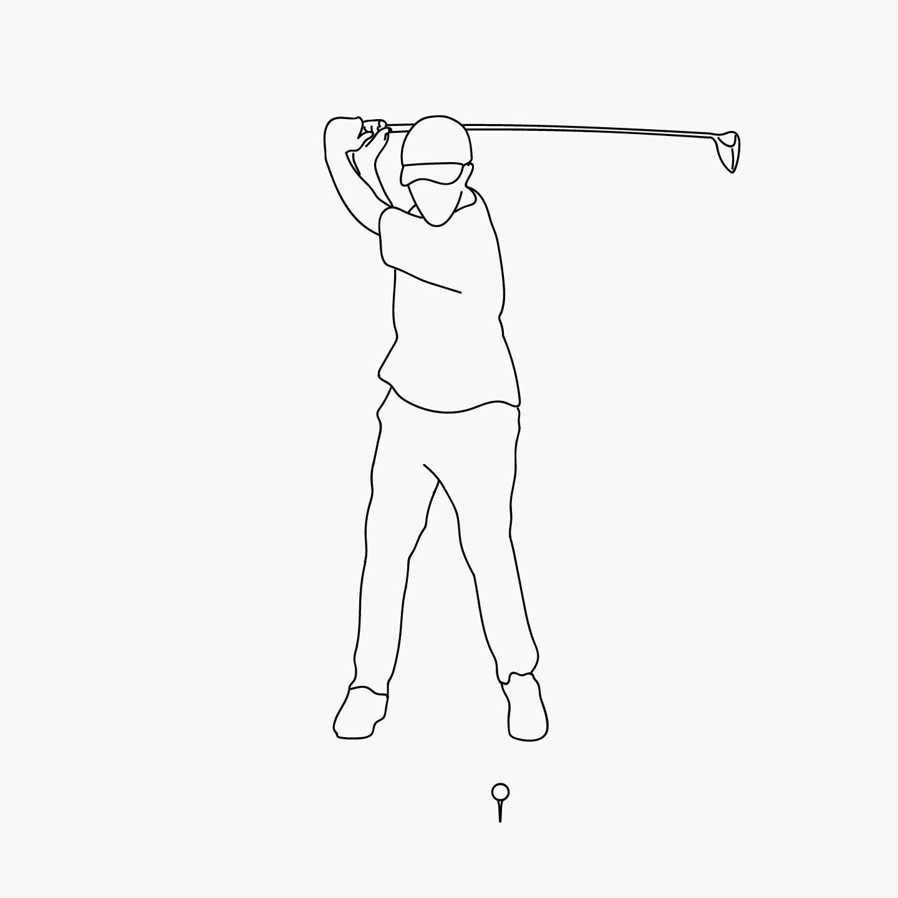
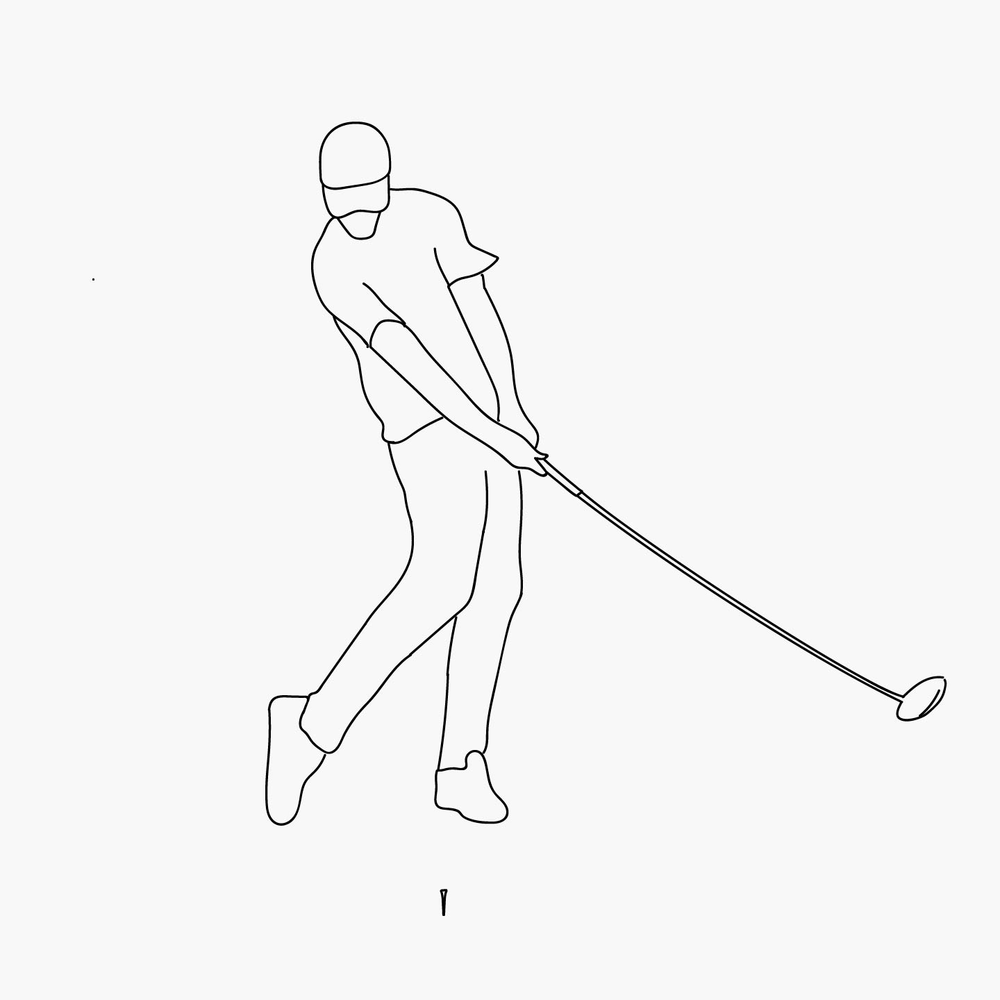

The Drive
Tips on getting off the tee.
PUBLISHED SEPTEMBER 21, 2017.The first tee can be one of the most intimidating places in sports. The open fairway ahead seems so close yet so far away, and we’re here to help you get out there in good position.
Swinging the driver is all about tempo. The club should come back and through in your swing at a natural pace as if the club is doing all the work. Adding a weighted donut to the club or swinging a heavier club can help with tempo issues.
Step by Step
- Tee up the ball to be even with the top of the club head.
- Stand with your feet just wider than shoulder width apart.
- Line up the ball with the inside of your front foot.
- Pull the club back keeping your left arm straight and right arm in towards your ribs.
- At the top of the club’s arc, your shoulders should be rotated 90 degrees while keeping your eye on the ball.
- Bring the club forward turning your right wrist over your left at impact
- Follow through and strike a pose.
- Then throw your club because you just hit it thirty yards into the pond on the left.


